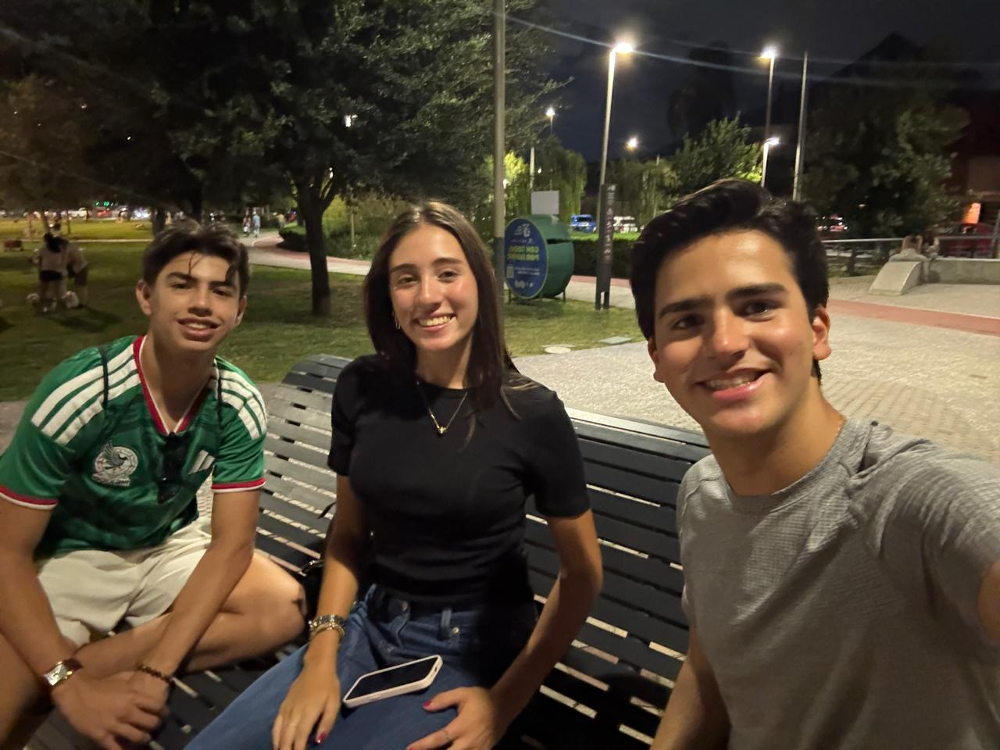

Próximamente
Ene–May 2027
Experiencias por definir y documentar.
PrepaTec CSC · Programa CAS
CAS PORTFOLIO · 2026–2028
Un registro de mis proyectos, progreso, retos y reflexiones a lo largo de cuatro semestres de Creatividad, Actividad y Servicio.

Estructura del portafolio
Cada semestre reúne mis experiencias de Creatividad, Actividad y Servicio, junto con su planeación, reflexión, resultados de aprendizaje y evidencia.
Landing de ICO · Box · Evento ICO septiembre
Experiencias por definir y documentar.
Experiencias por definir y documentar.
Cierre del proceso y reflexión final.
Semestre 01 · Agosto–Diciembre 2026
En este semestre elegí experiencias conectadas con intereses que ya forman parte de mi vida, pero con objetivos claros de crecimiento y documentación.
Diseñar, construir y mejorar una página web real aplicando comunicación, estructura visual y tecnología.
Ver experiencia →Desarrollar técnica, condición física, disciplina y constancia mediante práctica continua y un sistema de seguimiento.
Ver experiencia →Organizar y facilitar una experiencia gratuita de comunicación, aprender de lo que ocurrió y convertirlo en mejoras concretas.
Ver experiencia completa →Servicio · Septiembre 2026
Organización y facilitación de un evento gratuito enfocado en practicar comunicación real, enfrentar pequeños retos sociales y generar conexiones que normalmente no habrían ocurrido.
Planeación · convocatoria · organización · facilitación · seguimiento
Planeación
Crear una experiencia práctica donde los asistentes pudieran entrenar su comunicación, equivocarse, recibir retroalimentación y atreverse a conversar con personas nuevas. La planeación contemplaba tres dinámicas, momentos de reflexión y un cierre con feedback.
Realidad
La asistencia fue menor de la esperada. En lugar de cancelar, adapté el formato y participé también como compañero de práctica para que la experiencia siguiera teniendo valor.
Momento clave
Después de varios intentos muy cortos, Jorge logró sostener una conversación larga con una desconocida y terminó intercambiando Instagram. Valentina también logró conversar durante bastante tiempo con una persona que no conocía.
Reflexión
Cuando vi que iban a llegar muchas menos personas de las que esperaba me sentí frustrado, enojado y decepcionado. Me agüité porque había invertido tiempo en organizar el evento y esperaba una asistencia mayor.
Mi ánimo cambió cuando vi el progreso de los participantes. Me sentí muy feliz, orgulloso y contento por Jorge cuando logró sostener una conversación larga. También me dio mucho gusto ver a Valentina hablar con una desconocida con tanta naturalidad.
Del momento de Jorge con la desconocida. Para mí fue la prueba más clara de que, aunque el grupo fuera pequeño, la experiencia podía generar un cambio real en una persona.
Invitaría con mucha más anticipación, elegiría una fecha y una hora que funcionaran mejor para las personas interesadas y exploraría dedicar más parte del evento a conversaciones reales con desconocidos.
Lo que funcionó
Las dinámicas sí generaron aprendizaje. La experiencia más fuerte apareció cuando el reto salió del ejercicio y se convirtió en una conversación real.
Lo difícil
La invitación fuerte empezó tarde, la primera dinámica se alargó demasiado, bajó la energía y una actividad llegó cuando ya estaba oscuro.
Pregunta que me dejó
Aprendí que no todos necesitan el mismo apoyo: una persona puede necesitar estructura para continuar y otra apoyo para simplemente atreverse a empezar.
Siguiente iteración
Quiero confirmar mejor a los asistentes, elegir la fecha con más anticipación, usar límites claros de tiempo y cuidar el horario para aprovechar la energía del grupo.
Resultados de aprendizaje
En esta experiencia de Servicio identifico cuatro resultados de aprendizaje con evidencia clara.
Reconocí fortalezas como dar feedback específico y mantener estándares altos, pero también identifiqué que debo calibrar mejor la exigencia, el tiempo y la energía.
Tuve que adaptar un evento pensado para un grupo mayor, facilitar con pocos asistentes y aprender a responder a necesidades distintas en el momento.
Definí fecha, lugar, horario, registro, dinámicas y escaleta, y después comparé la planeación con lo que realmente ocurrió.
Aunque la asistencia fue menor de la esperada y me frustró, decidí realizar la experiencia, adaptarla y documentar cambios concretos para el siguiente evento.
Resultado que seguiré documentando en experiencias posteriores.
Resultado que aplicaré solo cuando exista una relación clara y justificable.
Resultado que seguiré observando y documentando cuando sea relevante.
Evidencias
La evidencia busca demostrar el proceso y la experiencia, no llenar la página con archivos.

Convocatoria, asistencia, ejecución, feedback, aprendizajes y plan de mejora.
Creatividad · En proceso
Diseñar y publicar una landing page para presentar ICO Monterrey de manera clara, atractiva y funcional. El proyecto combina comunicación, diseño, estructura de información y herramientas web.
La página ya ha pasado por varias versiones y rondas de feedback. La experiencia se cerrará como componente de Creatividad cuando documente el producto final, las decisiones principales y una reflexión sobre el proceso.
Actividad · En progreso
Practico box para desarrollar técnica, resistencia, disciplina y constancia. Ya había comenzado a entrenar, pero durante las primeras semanas no llevé una medición estructurada de mi progreso.
A partir de octubre utilizaré un sistema simple que me permita observar evolución real sin convertir cada entrenamiento en una tarea administrativa.
Fecha, duración y enfoque principal del entrenamiento.
Guardia, desplazamiento, jab, jab-cross, combinación y defensa.
Qué mejoré, qué me cuesta, qué aprendí y qué quiero trabajar después.
Semestre 01
Esta página se actualizará conforme avance el semestre. Las experiencias futuras se documentarán con el mismo criterio: planeación clara, reflexión honesta, resultados de aprendizaje y evidencia suficiente para mostrar el proceso.
Volver arriba ↑